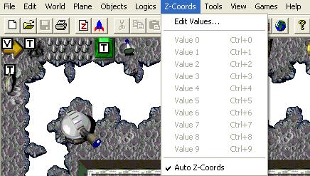

Z-Coords Menu

Edit Values…
This will allow you to edit the shortcuts that are used to quickly assign a Z-order to a selected object in your level.
Auto Z-Coords
This feature (when toggled on) will automatically assign a Z-order for a new object added to the level. The Z-order value it uses is determined when an object with the same logic name is first added to the level and a Z value was assigned. For example, the very first time I add an object with the logic name 'EyeCandy' to my new level I give it a value of '1'. Now every time I add a new object with the logic 'EyeCandy', the editor will give it the Z value of '1'.